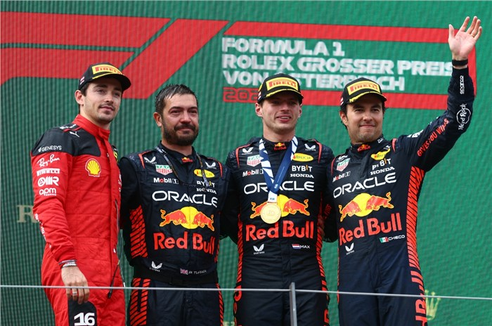
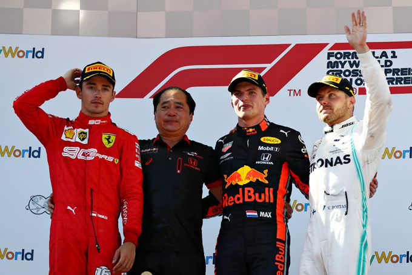

-

Uitslag 2023
P1. Max Verstappen - Red Bull Racing
P2. Charles Leclerc - Scuderia Ferrari
P3. Sergio Perez - Red Bull Racing -
WINNAARS VAN DE GP VAN OOSTENRIJK
- Max Verstappen - 2023
- Charles Leclerc - 2022
- Max Verstappen - 2021
- Valtteri Bottas - 2020
- Max Verstappen - 2019
-
CIRCUIT EN INFORMATIE
De Red Bull Ring ligt midden in de bergen van Spielber, Steirmarken en is geopend in 1969. Daarmee een van de oudere circuits die de Formule 1 op de kalender heeft. Het circuit heeft 10 bochten en daarmee is het een van de korste banen op de Formule 1 kalender.
Alle wereldkampioenschappen zoals, Formule 1, MotoGP, DTM en de Formule 2 en 3. In Europa behoort de Red Bull Ring tot een van de bekendste circuits die er zijn.Als je naar de Red Bull Ring gaat om te kijken naar de Formule 1 live heb je veel voordelen in 2024! Er is een Max Verstappen tribune waar je zicht heb op de bochten 3,5,6,7 en 8. Dit is de ideale plek om de Formule 1 live te kijken. Het circuit heeft enorme hoogteverschillen waardoor je 2 tot 3 keer zo veel meer zicht hebt dan bij een andere baan op de kalender in 2024.
De prijzen om de Formule 1 live te zien in Oostenrijk zijn verschillend. Ze starten voor het hele weekend van vrijdag ochtend tot zondagavond voor €495,00 en lopen op tot €625,00 euro. Ook heb je extra arrangementen exclusief de tickets zelf. Die starten vanaf €249,00 tot €1355,00 euro. Ook kan je op de camping staan naast het circuit dat een prijs heeft die begint vanaf €220,00 tot €800,00 euro. Het circuit is goed bereikbaar voor de fans. Het vliegveld ligt op 200km afstand voor als je met het vliegtuig komt. Het is ook bereikbaar met de trein, bus en auto. De GP van Oostenrijk denk niet alleen aan het Formule 1 en al het ander race spektakel. Het denkt misschien wel nog meer aan de fans!